![[*]](crossref.png) ) as well. In order to improve the overall
convergence behaviour it is possible to improve the models on the one
hand and/or to improve the algorithms on the other hand.
) as well. In order to improve the overall
convergence behaviour it is possible to improve the models on the one
hand and/or to improve the algorithms on the other hand.
Similar to the DC analysis convergence problems occur during the
transient analysis (see section 3.3.2 on page
) as well. In order to improve the overall
convergence behaviour it is possible to improve the models on the one
hand and/or to improve the algorithms on the other hand.
The implications during Newton-Raphson iterations solving the linear equation system
| 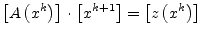 | (6.165) |
are continuous device model equations (with continuous derivatives as
well), floating nodes (make the Jacobian matrix  singular) and the
initial guess 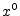. The convergence problems which in fact occur are
local minimums causing the matrix
singular) and the
initial guess 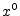. The convergence problems which in fact occur are
local minimums causing the matrix  to be singular, nearly singular
matrices and overflow problems.
to be singular, nearly singular
matrices and overflow problems.
The modified (damped) Newton-Raphson schemes are based on the limitation of the solution vector 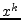 in each iteration.
| 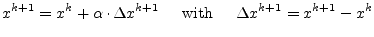 | (6.166) |
One possibility to choose a value for 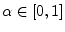 is
| 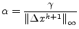 | (6.167) |
This is a heuristic and does not ensure global convergence, but it can help solving some of the discussed problems. Another possibility is to pick a value 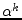 which minimizes the 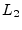 norm of the right hand side vector. This method performs a one-dimensional (line) search into Newton direction and guarantees global convergence.
| 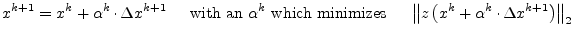 | (6.168) |
The one remaining problem about that line search method for convergence improvement is its iteration into local minimums where the Jacobian matrix is singular. The damped Newton-Raphson method ``pushes'' the matrix into singularity as depicted in fig. 6.11.
The basic idea behind this Newton-Raphson modification is to generate a sequence of problems such that a problem is a good initial guess for the following one, because Newton basically converges given a close initial guess.
The template algorithm for this modification is to solve the equation system
| 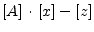 | (6.169) | |
| 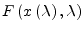 | (6.170) |
with the parameter
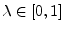 given that
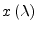 is sufficiently smooth.
 starts the continuation and
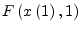 ends the continuation. The
algorithm outline is as follows: First solve the problem
starts the continuation and
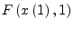 ends the continuation. The
algorithm outline is as follows: First solve the problem
 , e.g. set
, e.g. set
 and try to solve
and try to solve
 . If Newton-Raphson converged then increase
. If Newton-Raphson converged then increase  by
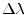 and double
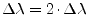,
otherwise half
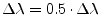 and set
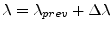. Repeat this until
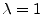.
by
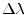 and double
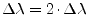,
otherwise half
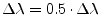 and set
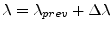. Repeat this until
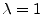.
Applied to the solution of (non-linear) electrical networks one may
think of
as a multiplier for the source vector  yielding
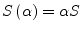. Varying 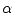 form 0
to 1 and solve at each . The actual circuit solution is done
when
. This method is called source stepping. The
solution vector
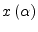 is continuous in
(hence the name continuation scheme).
yielding
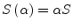. Varying 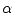 form 0
to 1 and solve at each . The actual circuit solution is done
when
. This method is called source stepping. The
solution vector
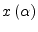 is continuous in
(hence the name continuation scheme).
Another possibility to improve convergence of almostly singular
electrical networks is the so called  stepping, i.e. adding a
tiny conductance to ground at each node of the Jacobian
stepping, i.e. adding a
tiny conductance to ground at each node of the Jacobian  matrix.
The continuation starts e.g. with
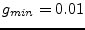 and ends with
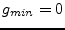 reached by the algorithm described in section
6.6.2. The equation system is slightly modified by
adding the current
matrix.
The continuation starts e.g. with
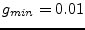 and ends with
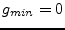 reached by the algorithm described in section
6.6.2. The equation system is slightly modified by
adding the current  to each diagonal element of the matrix
to each diagonal element of the matrix
 .
.